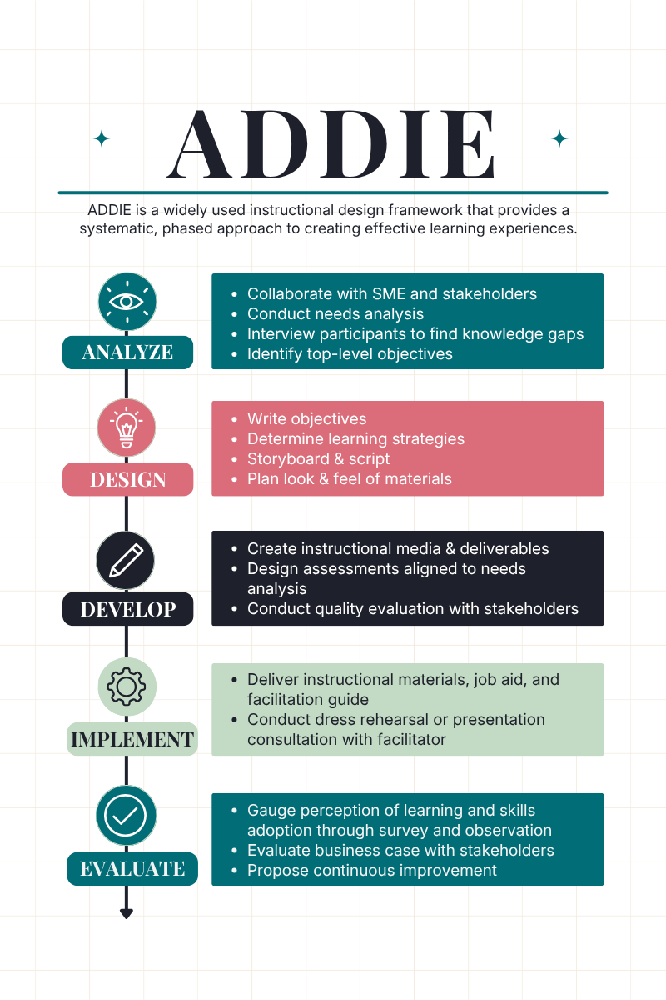
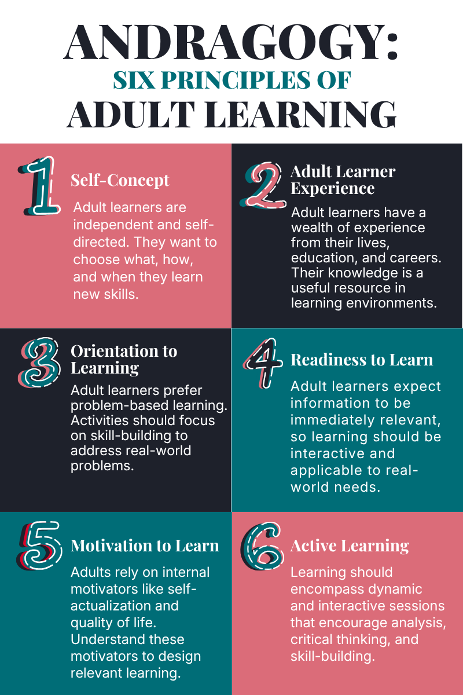
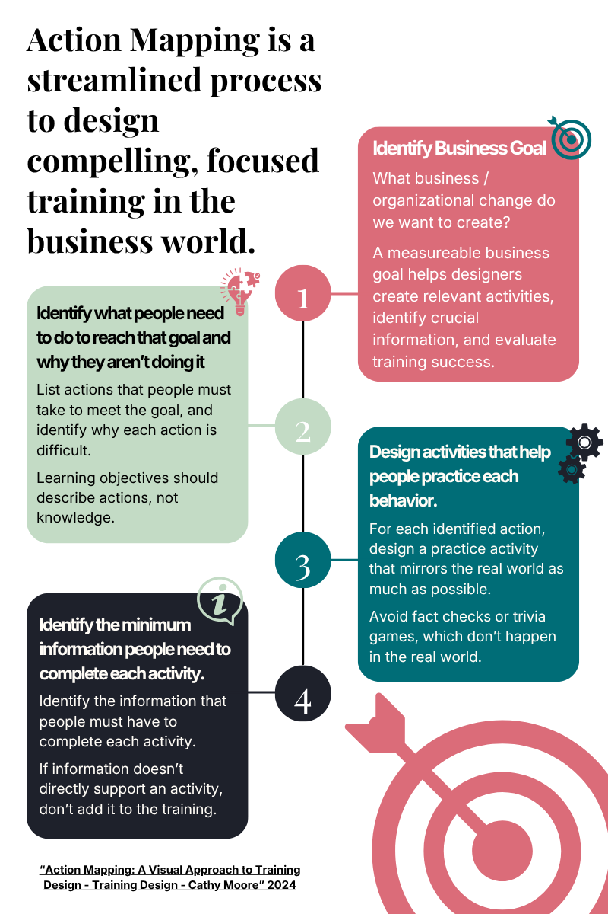
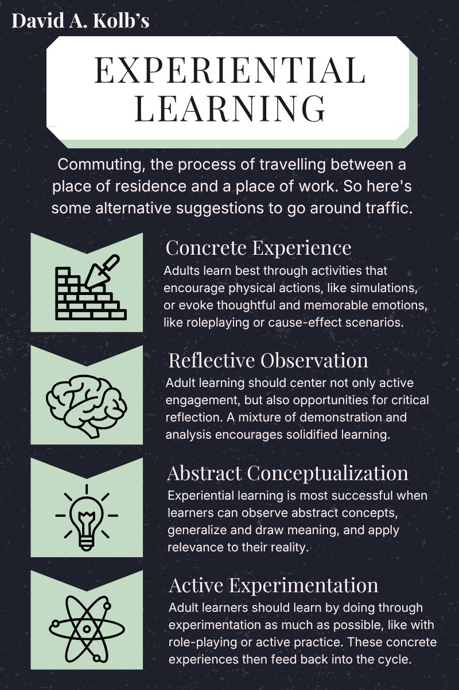
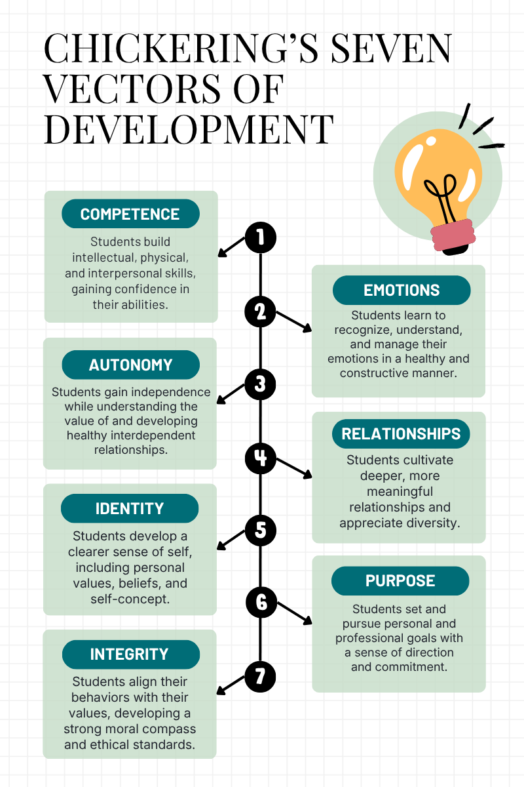
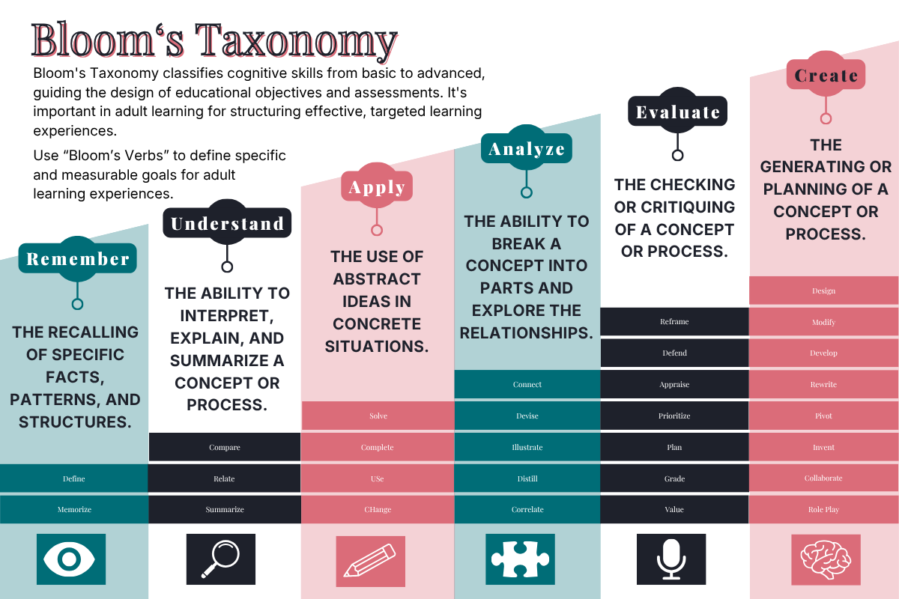
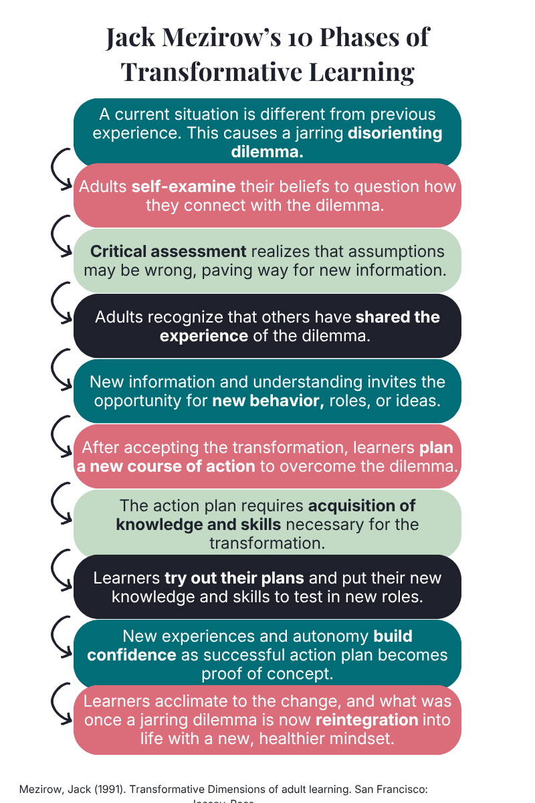
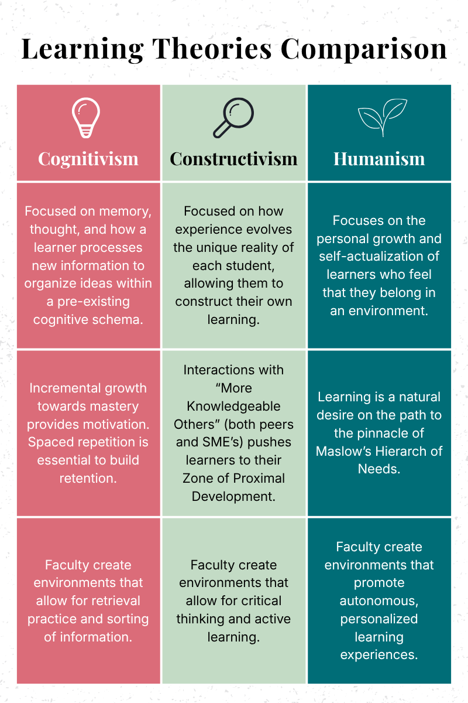
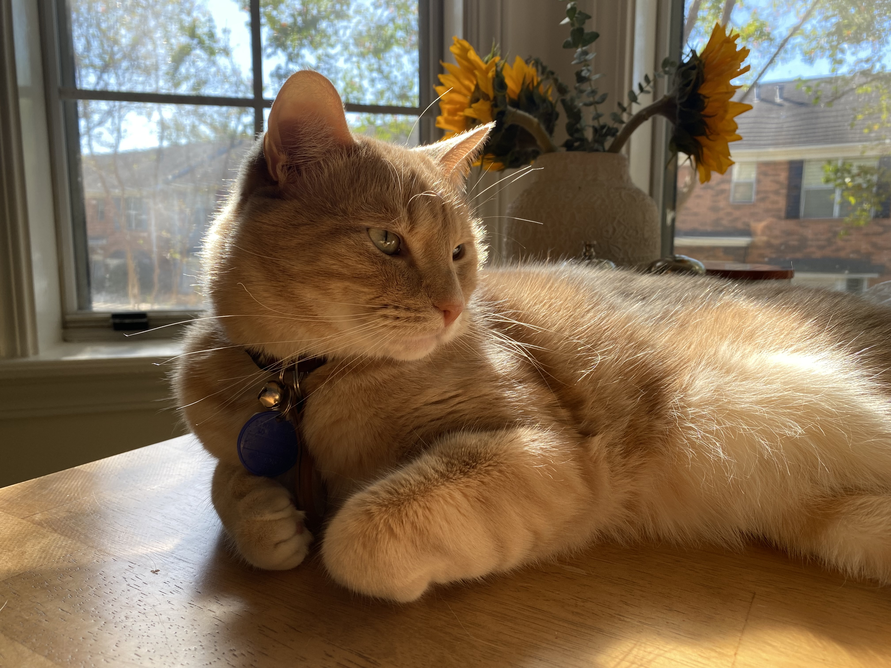

Instructional Design & Project Management
Why instructional design?
I love the puzzle of it. Someone hands me a business problem, and my job is to dig past the surface until I find the actual knowledge or skill gap underneath, then build something that closes it. Done right, the result is more than a training. It's someone walking into their role with real confidence, because they finally understand the "why" behind what they're doing.
I'm also, at heart, a systems person. I hold a PMP certification because I believe in building strong, repeatable processes, and I've found that the stronger the foundation, the more flexibility you actually get. A solid design system doesn't box a project in. It's what lets a project flex to fit each learner's specific needs without falling apart under pressure.
"Sometimes in hiring decisions, you take a risk on an external hire, and you get lucky and find a Summer." Jennifer Roth-Burnette, Director, University of Alabama
That kind of trust is something I try to earn on every team I join. I'm self-sufficient and accountable, the kind of person a team can hand a high-visibility project to and know it will get done well. I also genuinely enjoy mentoring, and I've taught new skills to teammates across every role I've held. Independence and collaboration aren't opposites to me. They're both part of doing the work right.
AI is a core part of how I work now, not a gimmick layered on top. I use it as a thought partner, an automator, a data analyst, a drafting tool, even a design assistant, woven into every stage of my process. But I hold my work to a quality bar AI can't meet on its own, so nothing goes out the door without my own judgment and review behind it. Learning design still needs a human hand on the wheel, and I've built my workflow around using AI ethically, efficiently, and with that standard intact.
"Summer, can you just clone yourself?" Emily Cavender, Learning & Performance Team Lead, Lyft
When a project is big, visible, and needs to land well, I'm the person people want on it. When something needs to move fast without cutting corners, that's also me. I design learning that elevates how people work, and I bring that same standard to every team I'm part of.
How I work
The tools, skills, and frameworks I bring to every project.
Tools
Articulate Rise
Articulate Storyline
Vyond
Canva
Camtasia
Google Suite
Microsoft Suite
Adobe Creative Cloud
Docebo LMS
Scribe
Professional skills
How I use AI, at every stage
The ID field is actively evolving to use AI tools efficiently and ethically. For me, AI isn't just a gimmick or a text generator, but an active partner in every phase of my design cycle.
Analyze
Synthesize performance data to locate knowledge and skill gaps, draft intake questions, and brief product launches.
Design
Draft outlines and storyboards, brainstorm activity ideas, and structure modules with AI as a thought partner.
Develop
Draft slide and eLearning content, generate graphics and video assets, and write assessment questions.
Implement
Build facilitator guides, draft training comms and announcements, and create quick-reference materials.
Evaluate
Analyze survey and performance data, build impact reports, and create data visualizations.
Resume
Lyft
Senior Learning Specialist, Safety and Customer Care, September 2024–Present
University of Alabama
Success Coaching Program Manager & Instructional Designer, 2021–2024
Education & credentials
- MS, Instructional Technology — University of Alabama, 2022–2023, 4.0 GPA, Kappa Delta Pi & Omega Nu Lambda honor societies
- PMP Certification — Project Management Institute, 2024
- MA, Creative Writing and Literature (in progress) — Harvard Extension School
- BA, English Literature — Lipscomb University, 2014–2018, 3.9 GPA, Alpha Chi & Sigma Tau Delta honor societies
Instructional Design Theories Inherent to My Work
I mean it when I say that my work is based in theory. The job aids below explain the learning and design principles that I weave into every project.








Beyond the work
When I'm not designing learning experiences, you'll usually find me with a book in hand. I'm working toward a master's degree in creative writing and literature through the Harvard Extension School, I'm a member of The Porch, a Nashville writers' community, and my shelves lean heavily on speculative and literary fiction. It's probably not a coincidence that the same instinct for shaping a good story shows up in how I write instructional content.
Other ways I spend my time outside of my career:
- Watching Liverpool FC games every weekend. You'll Never Walk Alone!
- Playing DnD or board games every week with friends. Current favorites are Everdell, Doomlings, and 7 Wonders. Just finished a 3-year campaign with a Dragonborn Pally-Hex Blade, IYKYK.
- Staying active with pilates, tabata-style cycling, progressive lifting, and short outdoor walks throughout the day.
- Exploring the music and food scenes in Nashville, TN, where I'm based.
- Pampering my tabby cat named Fiddler, who lives up to every cliche about orange cats.
